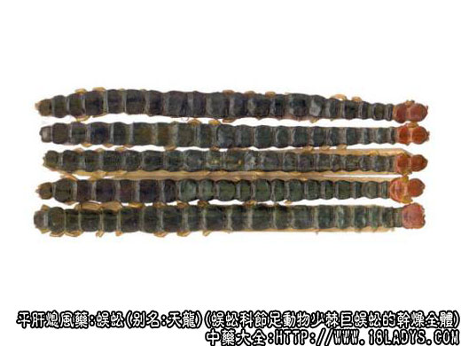

本品为较常用中药。始载《神农本草经》，列为下品。
别名：天龙。
来源：为蜈蚣科节足动物少棘巨蜈蚣的干燥全体。野生及养殖。为夜行性肉食动物。喜栖居于石隙下及朽木间或潮湿阴暗地带。
产地：主产于湖北、湖南、浙江、此外江苏、河南、安徽、陕西、四川等地亦产。
性状鉴别：呈扁长条形，长约14～16厘米，宽0.6～1厘米，全体由22个同型环节构成，头部红褐色或青褐色，有触角及毒钩各一对。背部黑绿色，光亮，有两条突起的棱线。腹部棕黄色，皱缩，每节有足一对，生于两侧，向后弯曲，黄色或红褐色，末端有尾脚一对，细长如尾，多已脱落。断面有裂隙或空虚。稍有腥气，并有特殊刺鼻臭气，味辛而微咸。
以条长，头红，身黑绿，完整者为佳。
主要成分：含类似蜂毒的两种有毒成分，即组胺样物质和溶血蛋白质。
药理作用：熄风镇惊，其作用为：
（1）抗惊厥。作用比全蝎强。
（2）降压。临床观察初步发现10%蜈蚣酊对高血压患者有一定降压作用，但尚待进一步的试验和临床研究加以证实。
炮制：剪断，生用。
性味：辛、温。有毒。
归经：入肝经。
功能：祛风镇痉，攻毒散结。
主治：惊痫抽搐，破伤风，中风口?，瘰疬疮毒，蛇虫咬伤等症。
临床应用：
（1）用于治疗破伤风和小儿急惊风，取其有较强的止痉作用，配全蝎作用更好，或用蜈蚣散亦可。
（2）用于治疗面神经瘫痪（口眼歪斜），以蜈蚣2条，研末，用防风5g煎汤送服，或配全蝎、钩藤、白附子、僵蚕，水煎服。
（3）外用治疮疡、瘰疬、蛇虫咬伤，一般可用蜈蚣干燥粉末加入等量甘草末，调蜜蜡外涂。
如为化脓性指头炎(俗称“蛇头缠指”)可用蜈蚣1条熏干，研末，用生鱼胆汁（或猪胆汁调匀敷涂，效果较好）。
如为足趾坏疽和溃疡（俗称“臭田螺”）可用蜈蚣浸茶叶，涂患处。
附：
（1）一般认为蜈蚣入药宜带头足，去之则药力不全。
（2）蜈蚣与全蝎比较：镇惊止搐之力，蜈蚣大于全蝎，一般抽搐可用全蝎，严重抽搐痉挛，用蜈蚣或蜈蚣全蝎同用；蜈蚣辛温，抽搐而不偏于风寒者较适合，全蝎辛平，抽搐而偏于热者较适用；又蜈蚣外用治肿毒之力较好，为全蝎所不及。
（3）蜈蚣有毒，前人有谓“蜈蚣性猛悍，能令血液化燥”，因此，得效后即应停用。孕妇慎用。
用量：入散剂0.9～2.4g，入煎剂1～5条。
处方举例：蜈蚣散（即蜈蚣星风散，《医宗金鉴》）；蜈蚣6g，制南星7.5g，防风7.5g，鱼螵9g，共为细末，每服6g，黄酒调下（或温开水送服），一日二次。